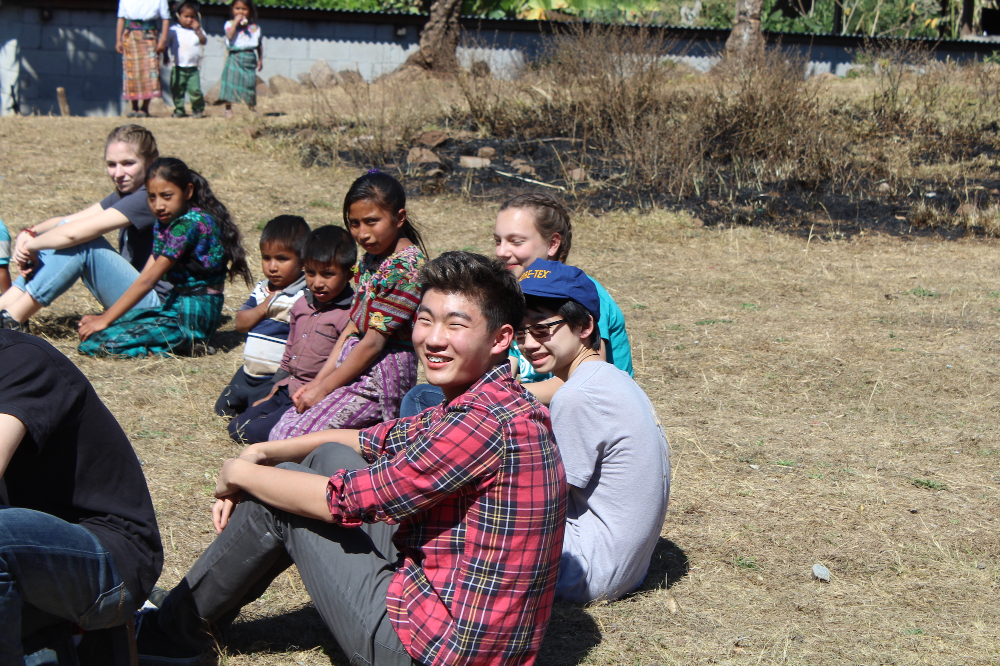
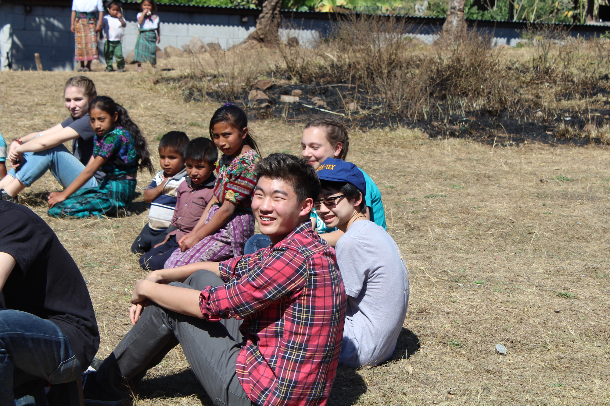

Día 2: Tomalo #nofilter
"Jesús, por ti yo viviré,
de ti nunca me avergonzaré
Te doy todo lo que soy,
toma, tómalo, toma, tómalo."
-TOMALO, Hillsong
üîäAUDIO ON
Updates
First day in the Colonia de Flores. All 16 of the homes there were built by Willow Creek.
The community was so welcoming and kind towards us; the outsiders, the foreigners.
I felt like we not only looked, dressed, and acted differently; we also had a completely different sense of humor, upbringing, and way of life.
Yet with all our differences we all spoke the language of love and service fluently.
Smiles were contagious
Laughter was as incessant as the sun roasting us out there on that summer day
Everyone and their mother in Guatemala thought that Yenny's camera was mine...
Well it basically was üòé
We played soccer, duck-duck-goose, and tug-of-war with the community.
Colin and I were rock stars and the Guatemalans were our biggest fans.
For some reason there was a draw to get pictures with us, (mostly Colin), and thus the GUATE HOTAY was born
Ethan, Jeremy, and Elliot counted themselves out because they either didn't look Asian enough or wore glasses üòÇ
I got to make Anna and Mattea laugh just by sassing Yenny ‚ò∫Ô∏èüòÇ
I'm glad someone appreciated my sass.
Anna also saw me lip-syncing during our worship where ALL THE GUYS WERE DEAD SILENT and she was dying üòÇ
What do you expect when the guitar goes out of tune and all the guys are have 0 singing ability.
(I personally think I can harmonize to an extent, but only if someone else sings the melody... but I don't know ü§∑‚Äç‚ôÇÔ∏è... maybe I'm tone-deaf)
We also had a blast at Axel's home.
With all the Asians on this trip. We basically picked up and played every instrument Axel owned and began playing it. ☺️
This was the only time in my life where I witnessed the Asian musical upbringing pay off. üòÇ
BAILANDO
"Sunrise in Patzún""Yenny's first photography lesson" "Me doing what I do best""Yenny doing what she does best (holding my lens cap)""He's excited! I promise!""Can't tell if Hilly's smiling...""Can't go to Guate without futbol""First day with the kiddos""Dr. Axel in the flesh""Hearts all over the world üé∂""Squad up""Just me and my homies... and Yenny""Willow Creek Postcard 2019""A rare Elli celly after he finally was able to get a foot on the ball without tripping""Guate hotay pre-paparazzi""Tell me she doesn't run like a Velociraptor""Post futbol gathering""Kenny's thoughts: 'we are very outnumbered'""Yenny took this one because the lighting is bad""Hilly's face looks photoshopped""The most awkward thing about this is the fact I didn't get the dress-up memo""Plant Hope Pack Seeds""Come at me bro""Come at me bro (improved version)""Sunset in Patzún""The moment I knew something was wrong with this kid..."
"Me doing what I do best""Yenny doing what she does best (holding my lens cap)""He's excited! I promise!""Can't tell if Hilly's smiling...""Can't go to Guate without futbol""First day with the kiddos""Dr. Axel in the flesh""Hearts all over the world üé∂""Squad up""Just me and my homies... and Yenny""Willow Creek Postcard 2019""A rare Elli celly after he finally was able to get a foot on the ball without tripping""Guate hotay pre-paparazzi""Tell me she doesn't run like a Velociraptor""Post futbol gathering""Kenny's thoughts: 'we are very outnumbered'""Yenny took this one because the lighting is bad""Hilly's face looks photoshopped""The most awkward thing about this is the fact I didn't get the dress-up memo""Plant Hope Pack Seeds""Come at me bro""Come at me bro (improved version)""Sunset in Patzún""The moment I knew something was wrong with this kid..." "My Yenny joke was so funny the Guatemalan is laughing... wya LazüòÇ"
"My Yenny joke was so funny the Guatemalan is laughing... wya LazüòÇ"